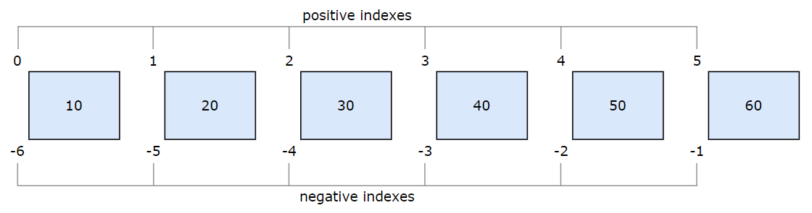
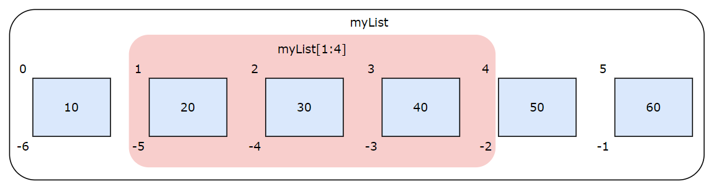
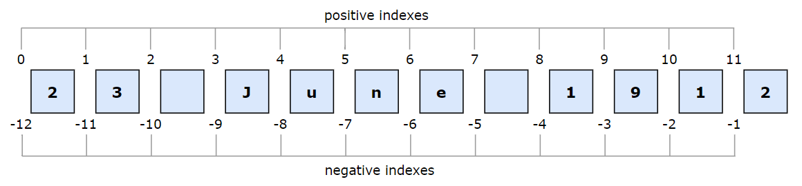
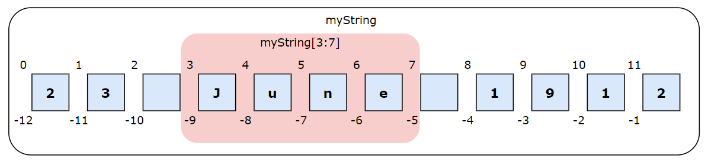

How to slice lists and strings
In Articulate Text Language (ATL), you can reference a single element in a sequence by using bracket notation and specifying the positional index. For instance, myList[0] references the myList value at Index 0.
Slicing, a related concept, involves specifying two indexes — a start index and end index — to extract a specific portion of the sequence, such as the first three values in a list. While you can achieve this with functions such as sublist() and substring(), slicing offers greater versatility and enables you to write simpler ATL.
Zero-based indexing
Slicing uses zero-based indexing, meaning that the initial element in a sequence is assigned Index 0, not Index 1. Indexes can count forwards from the start or backwards from the end. This is illustrated below.
Each block represents a value in a numeric list. Each value — that is, each element in the sequence — has two indexes: a positive index and a negative index. Use this indexing system to define start and indexes for slices.
Syntax for slicing
The basic syntax for slicing is:
input[startIndex:endIndex]
| Element | Description |
|---|---|
input |
The list or string to slice. |
startIndex |
The inclusive start index for the slice. |
: |
The slicing operator. |
endIndex |
The exclusive end index for the slice. |
- You must include the square brackets and slicing operator.
- If
startIndexis unspecified, the default is Index 0. - If
endIndexis unspecified, the slice includes all values fromstartIndexonward.
List slicing
Each list value — that is, each element in the sequence — has a positive index and a negative index. The values can be of any type (strings, lists, etc.), but here we'll use a list of numbers.
The ATL myList[1:4] returns a slice comprising the second, third, and fourth values only, as shown in the pink area above. Remember, the end index is exclusive, so the fifth value (at Index 4) is excluded.
Also, remember that every position in the list has two indexes: one positive and one negative. Therefore, myList[-5:-2] returns the same slice as myList[1:4]. You can mix positive and negative indexes.
You can specify index values that go beyond either end of the list. Parts extending beyond the actual list are ignored. For example, myList[3:7] returns a slice comprising the values at Indexes 3, 4, and 5.
List slicing examples
If startIndex is unspecified, the default is Index 0.
| Example Code | Input List | Returned Slice |
|---|---|---|
|
(10, 20, 30, 40, 50, 60) | (10, 20, 30) |
If endIndex is unspecified, the slice includes all values from startIndex onward.
| Example Code | Input List | Returned Slice |
|---|---|---|
|
(10, 20, 30, 40, 50, 60) | (40, 50, 60) |
As shown above, use [ :N] to get the first N values, and [-N: ] to get the last N values.
String slicing
You can use the slicing syntax to extract a substring from a larger string.
When slicing a string, treat each character as an individual value. This includes blank spaces. For example, this image shows a breakdown of the string "23 June 1912" using zero-based indexing:
Each character — that is, each position in the sequence — has two indexes, one positive and one negative. Use this indexing system to define start and end indexes for your slice. For example:
The variable myString returns the whole string, whereas the ATL myString[3:7] returns the substring "June". Remember, the end index is exclusive, so the eighth character (at Index 7) is excluded.
Also, remember that every string character has two indexes, one positive and one negative. Therefore, myString[-9:-5] returns the same slice as myString[3:7]. You can mix positive and negative indexes.
String slicing examples
If startIndex is unspecified, the default is Index 0.
| Example Code | Input String | Returned Slice |
|---|---|---|
|
"23 June 1912" | "23 June" |
If endIndex is unspecified, the slice includes all characters from startIndex onward.
| Example Code | Input String | Returned Slice |
|---|---|---|
|
"23 June 1912" | "June 1912" |
As shown above, use [ :N] to get the first N characters, and [-N: ] to get the last N characters.